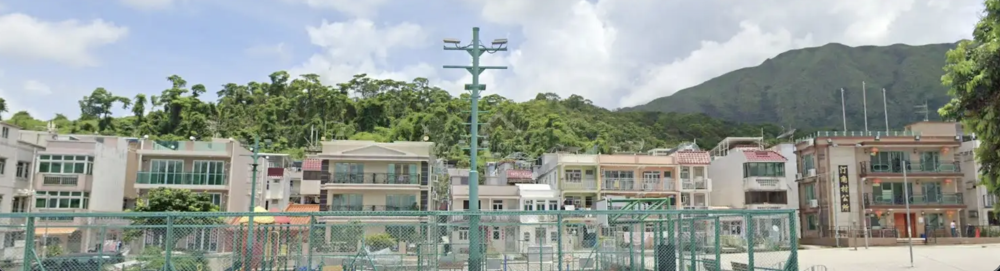

A local village is a traditional residential area, originally for local indigenous farmers. Still predominantly local indigenous farmers, though expansion and access for locals from highrise areas of HK as well as expats continues to increase. HK has 18 districts in total, all for the purpose of adminstrative and development planning, each district is represented by a distrinct council. Tai Po is 1 of 18.
The NT holds 9 out of the 18 HK districts and is the most abundant main region to
find local villages.
The houses that a village is made up of are frequently larger and low-rise compared
to those in the center of Hong Kong, HK island, concentrated with economical, political and
historical aspects.